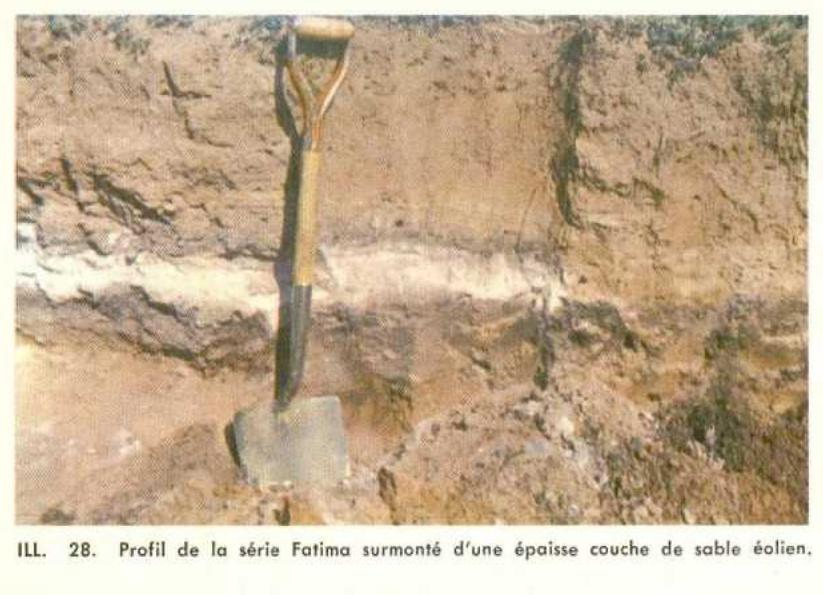

Identification & Caractéristiques Générales
La série Fatima se développe sur des matériaux meubles d'origine glacio-marine ou sur des dépôts résiduels sableux, caractérisés par une nature fortement siliceuse. Ces sols occupent des positions topographiques variées, généralement caractérisées par des pentes douces à modérées influençant le ruissellement de surface. Le profil pédologique présente une lithologie meuble surmontant un substrat ou un matériau parent meuble à texture grossière, dont la mise en place est associée aux dynamiques quaternaires régionales, notamment documentées dans l'archipel des Îles-de-la-Madeleine.
Morphologiquement, le profil pédologique se distingue par la présence d'un horizon B induré et cimenté, qui restreint considérablement la percolation verticale et constitue une barrière physique quasi impénétrable pour le système racinaire, à l'exception des axes de fissuration. La texture globale des horizons supérieurs est fortement sableuse, conférant au sol une faible capacité de rétention en eau et en éléments nutritifs. Le drainage naturel est influencé par la présence de cet horizon compact, et la réaction chimique du sol démontre une forte acidité inhérente. Sur le plan biologique, la végétation naturelle associée comprend des peuplements de résineux tels que le sapin baumier et l'épinette noire, ainsi qu'une lande à éricacées (Kalmia, bleuet, camarine noire), tandis que la flore adventice des surfaces cultivées est dominée par l'épervière et le fraisier.
Du point de vue agronomique, les sols de la série Fatima présentent des limitations sévères à la mise en culture. Leur texture sablonneuse, combinée à une pauvreté marquée en éléments fertilisants et à une acidité prononcée, nécessite des apports réguliers d'amendements calcaires et de fertilisants minéraux ou organiques. L'induration de l'horizon B représente une contrainte majeure pour le développement radiculaire et la gestion hydrique, limitant l'efficacité des interventions culturales. L'utilisation agricole de ces sols requiert une régie rigoureuse incluant un chaulage méthodique pour corriger le pH, une fertilisation fractionnée pour contrer le faible complexe d'échange cationique, ainsi que des pratiques de gestion visant à limiter les risques de sécheresse estivale et d'érosion éolienne ou hydrique.
Classification Taxonomique & Environnement Pédologique
| Ordre Pédologique | Podzolique |
|---|---|
| Grand Groupe (SCSS) | Podzol humo-ferrique |
| Sous-Groupe Taxonomique | Podzol humo-ferrique à orstein |
| Famille Pédologique | Sableuse, mixte sableux, acide |
| Mode de Dépôt Parental | Résiduel |
| Classe de Drainage Naturel | Bien drainé |
| Régime Thermique & Humidité | Frais / Subhumide |
Description Morphologique du Profil Type
Séquence génétique des horizons pédologiques caractérisant le profil type représentatif de la série Fatima :
Profil représentatif — Pédologie des Îles-de-la-Madelei
✓ Source : Pédologie des Îles-de-la-Madelei — Page 32Couleur Munsell : 5YR 5/4
Structure & Consistance : Polyédrique à granulaire
Description morphologique : Loam sableux fin brun rouge (5YR 5/4); particulaire; friable; perméable; très fortement acide.
Couleur Munsell : 5YR 7/2
Structure & Consistance : Polyédrique à granulaire
Description morphologique : Sable fin gris rose (5YR 7/2); particulaire; friable; perméable; très fortement acide.
Couleur Munsell : 5YR 5/2
Structure & Consistance : Polyédrique à granulaire
Description morphologique : Sable gris rouge (5YR 5/2).
Couleur Munsell : 5YR 4/8
Structure & Consistance : Polyédrique à granulaire
Description morphologique : Loam sableux et sable limono-graveleux rouge jaune (5YR 4/8); particulaire; friable; quelques concrétions; perméable; très fortement acide.
Couleur Munsell : 2.5YR 3/4
Structure & Consistance : Polyédrique à granulaire
Description morphologique : Sable et sable graveleux brun rouge foncé (2.5YR 3/4); cimenté, impénétrable par les racines, imperméable; fortement acide.
Couleur Munsell : 2.5YR 4/6
Structure & Consistance : Particulaire
Description morphologique : Sable fin, roc décalciqué rouge (2.5YR 4/6); structure particulaire; compact, devient friable après déplacement; fortement à très fortement acide.
Profils Photographiques & Planches de Terrain
Documents iconographiques, figures pédologiques et coupes de terrain documentées dans les mémoires d'inventaire pour de la série Fatima :

Propriétés Physico-Chimiques & Analyses de Laboratoire
Données Analytiques de Laboratoire
Aucune analyse physico-chimique quantitative de laboratoire (granulométrie par sédimentométrie, pH H₂O/CaCl₂, matière organique Walkley-Black ou bases échangeables) n'a été consignée pour cette unité dans les archives historiques numérisées ou les bases contemporaines EESSAQ/MAPAQ.
Particularités Régionales, Phases & Variantes Pédologiques
Déclinaisons régionales, faciès texturaux, phases d'érosion ou de pierrosité et variantes cartographiées par étude pour de la série Fatima :
| Étude Régionale | Symbole | Appellation / Phase / Variante | Différenciation avec la série type (Analyse pédologique) |
|---|---|---|---|
| Pédologie des Ïles-de-la-Madeleine | F |
Fatima loam sableux fin à sable fin | Modalité modale de référence (type de base de la série). |
| Pédologie des Îles-de-la-Madelei | FTM |
Série Fatima (F) | Conforme à la série type de référence (caractéristiques texturales et drainage identiques). |
Distribution Pédo-Paysagère & Représentativité Cartographique (Couverture PPS 2026)
- Gros-Cap sable (GSP) — co-occurrente dans 12 polygone(s)
- Lavernière loam sableux graveleux (LVN) — co-occurrente dans 9 polygone(s)
- Coffin sable à sable loameux (CFF) — co-occurrente dans 8 polygone(s)
Aptitudes Agronomiques, Hydropédologie & Conservation des Sols
Indicateurs Hydropédologiques & Vulnérabilité à l'Érosion (BDHP 2026)
Interprétation BDHP : Potentiel de ruissellement très élevé. Taux d'infiltration très lent, sols très argileux, couches compactes ou nappe temporairement affleurante.
Classement selon l'Inventaire des Terres du Canada (ITC / CLI) : Classe 3m.
- Potentiel agricole : Terroir adapté aux cultures régionales selon la texture dominante et la régie de drainage.
- Contraintes majeures : Bien drainé. Risque d'engorgement temporaire ou d'excès d'eau printanier.
- Gestion & Aménagement : Drainage souterrain ou superficiel préconisé sur les terres planes. Chaulage et apport organique régulier selon les bilans agronomiques.
- Cultures adaptées : Grandes cultures (maïs, soya, céréales), prairies fourragères et cultures maraîchères selon le contexte géomorphologique.